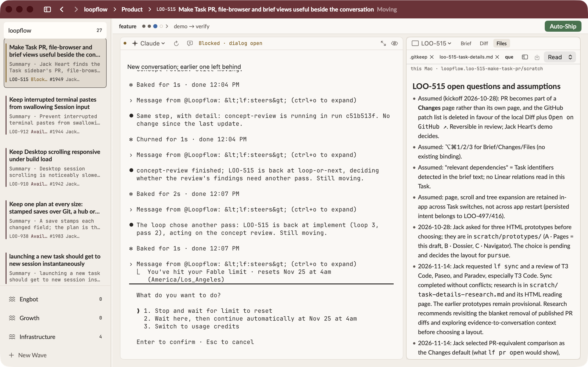

Loopflow for Mac, before and after the rules
Two screens of the Mac app rebuilt in HTML with every rule in DESIGN.md applied: the Task workspace and a Wave's backlog. Same layout, same panes, same theme colors, same content. Left is a screenshot of the app today; right is the prototype, and it is live: hover, tab and click through it.
More screens: the Task pane, the dashboard and the theme chooser.
The numbers on the prototype match the notes under each pair; click a note or a number to find its partner. Colors are the bundled Loopflow Light and Loopflow Dark themes, value for value. The screenshots exist in light only.
| The app today (whole app, from the audit) | These two prototype screens | |
|---|---|---|
| Font sizes | 20, with half-point sizes 24 times | 6 named steps (26, 17, 13, 11, mono 12, terminal 13) |
| Smallest text | 8 pt | 11 pt |
| Corner radii | 6 is the most used and is not in the scale | 3, one per kind of thing: control 4, row 8, pane 12 |
| Spacing | 166 literal paddings | 8 named steps only |
| Prose set in mono | Summaries, statuses, counts, notices | None. Mono is IDs, paths and the terminal |
| Fields ending in "…" in a sidebar row | 3 | 0 |
The Task workspace

- exploreyou
- plan
- build
- human-reviewyou
- deliver
- verifyyou
New conversation; earlier one left behind
What do you want to do? ❯ 1. Stop and wait for limit to reset 2. Wait here, then continue automatically at Nov 25 at 4am 3. Switch to usage credits Enter to confirm · Esc to cancel
This Macloopflow.loo-515-make-task-pr/scratch
LOO-515 open questions and assumptions
- Assumed (kickoff 2026-10-28): PR becomes part of a Changes page rather than its own page, and the GitHub patch list is deleted in favour of the local Diff plus
Open on GitHub. Reversible in review; Jack Heart's demo decides. - Assumed: ⌥⌘1/2/3 for Brief/Changes/Files (no existing binding).
- Assumed: "relevant dependencies" = Task identifiers detected in the brief text; no Linear relations read in this Task.
- Assumed: page, scroll and tree expansion are retained in-app across Task switches, not across app restart (persisted intent belongs to LOO-497/416).
- 2026-10-28: Jack asked for three HTML prototypes before choosing; they are in
scratch/prototypes/(A · Pages = this draft, B · Dossier, C · Navigator). The choice is pending and decides the layout forpursue. - 2026-11-14: Jack requested
lf syncand a review of T3 Code, Paseo, and Paradev, especially T3 Code. Sync completed without conflicts; research is inscratch/task-details-research.mdand its HTML reading page. The earlier prototypes remain provisional.
The brief is not drawn in this prototype.
Pull request #1949, open
Make Task PR, file-browser and brief views useful beside the conversation
loo-515-make-task-pr into main
6 files, 184 added, 42 removed
Checks 2 passed, 1 failed
rust-lintPassed42 s
swift-viewsPassed18 s
rust-testFailed
main is 2 commits ahead of this branch.
- 1One title bar. The two screenshots have different title bars: bare breadcrumbs here, a grey capsule with a moon button on the backlog. Both screens now use this one. Each control is a 24 pt target. Rule: one component per job.
- 2The sidebar row lost its stripe and its border, and its summary earns its place. Every row drew a colored edge whether or not it had a status, and the selected row added a border and a fill. Selection is now the theme's solid fill and nothing else. The mono "Summary · Jack Heart finds the…" lines are gone. A row that needs you gets one line, in the interface face, saying what it is asking. Titles wrap in full. Rules: no stripe without a status; mono is not for prose; quiet until it matters.
- 3The last line carries two whole fields, not four clipped ones. It read "LOO-515 Block… #1949 Jack…". It is now the ID, and the status with the time it began, in tabular digits. The pull request and the owner are in the Task's own pane. Rule: drop a field; don't clip three.
- 4Counts are in the interface face. "27", "0" and "4" were mono. They are sans with tabular digits, so they still line up. Rule: mono is for things you could paste into a terminal.
- 5The workflow line names every step and says when you are next needed. It was four dots, one blue, then "demo → verify" with a typed arrow. Each step is a word; a mark shows the steps that stop for you (five ways to draw it are in the switch at the top); the running step is strong and in the working color; and a sentence says it outright. This is the only workflow drawing in the prototype; the app has three. Rules: state is never color alone; glyphs are not icons; one component per job. The screenshot names only two of its four steps, so the names here are the current
featureGraph's. - 6Auto-Ship is an ordinary button. It was a solid green block, the loudest thing on the screen, in the color that means success. An action that has not happened yet is not a success. Rule: ordinary controls use neutral ink; status colors are for status.
- 7One status mark, in words, with its next step. The header had a brown dot at the far left, a sparkle before "Claude", and "Blocked · dialog open" in amber mono. It is one dot and one phrase in the interface face, and a button that takes you to the dialog. Rules: a status is a word first; every state offers its next step.
- 8The notice has its own line. "New conversation; earlier one left behind" was drawn on top of the first terminal line, so both were unreadable. Same words, in a strip above the terminal.
- 9The terminal uses the app's mono, with ligatures off and a little more line height. Today Loopflow sets the terminal's size (13) and leaves the face to Ghostty, so an unconfigured terminal is JetBrains Mono beside the app's own mono. Here it is the app's mono at 13, a named
terminalstep, at about 10% more line height. A person's Ghostty config still wins. Rule: one component per job. The<lf:steers>text is in the screenshot too: a bug in what lf prints, left visible. - 10The open file is named in full. Three file tabs were squeezed into the pane and the active one read "que". It is one menu showing
questions.mdand how many are open. "this Mac" is a place, not a path, so it is sans; the path stays mono. Rule: nothing meaningful truncates. - 11The document heading is a ramp step. It was about 17.5 pt and the body 13.5 pt. They are 17 and 13. With Old Standard in use, the 17 pt step moves from serif to sans, because that serif falls apart under 24 pt. That is a change to the ramp, so it belongs in DESIGN.md if this goes ahead.
- 12Failures come with their fix. Click Diff to see it. The pull request's checks are summed up in one line ("2 passed, 1 failed"), each state is a word, the failed check has "Run again" beside it, and a branch that has fallen behind has "Sync branch" beside the sentence that says so. Rule: every failure offers its next step. This pane is not in the screenshot; the check names and numbers are stand-ins.
A Wave's backlog

Product conversation
› what should we pick up next? LOO-903 is the only Task here with a design ready. LOO-515 and LOO-434 both touch the Task workspace; reading them together before starting either would keep them from colliding.
No live provider is connected.
Product
- LOO-458lf account shows each login with a bar and how much is left
- LOO-456lf monitor opens with one line saying how many sessions are running and how many wait on you
- LOO-452Customize Desktop shortcuts and explain effective bindings
- LOO-423Fix what the herdr and cmux trial finds
- LOO-392Fit an opened Flow exec's step diagram inside its pane
- LOO-391Prove Workflows with a real provider, real data and a real screen
- LOO-387Recommend skills beside the native Session input
- LOO-384Show an interactive conversation as Waiting when it stops or asks
Follow-up to LOO-353 (PR #1439), deferred by Jack Heart on October 6.
Who benefits: Jack, working in Desktop with one primary Task conversation.
LOO-353 added one Waiting state, but lf only knows it for conversations whose event stream it owns: headless Runs and Codex. An interactive Claude or OpenCode conversation, which is what a primary Task conversation usually is, never shows as Waiting. Jack: "seems like not the right product experience, but OK to defer to land this."
- LOO-333Operate Waves recursively and assess the repository with VSM
- LOO-510Adopt Loopflow without replacing your existing way of working
- LOO-511Make automation permissions and failure recovery understandable before the first run
- LOO-514Make Wave backlogs, conversations and open-Task dashboards work together
Design preview of a planning snapshot. Edits stay here.Preview only. Start would claim LOO-384 and run it with feature.
- 1The same sidebar row as the other screen. Here the rows had no stripe and two mono lines under the title; there they had a stripe and three. It is one row: title, then ID and one short field. "Backlog exploration" is a name, so it is sans. Rule: one component per job.
- 2A dead end became a next step. "Live provider not connected" was a mono caption with nothing to press. It is a sentence with the action beside it. Rule: every state offers its next step. The action's wording is mine; I don't know what the app can offer here.
- 3The Wave's name is the one serif thing on the screen. It was bold sans at about 20 pt, a size outside the ramp. It is the 34 pt display step, in the theme's emphasis ink. Rule: one idea per surface; named steps only.
- 4Filters are one control at one size. "All 46 / Mine 0 / Available 43" used grey-on-grey for the unselected parts, and a loose "unstarted" sat beside it with no shape. The selected part uses the selection fill, counts are tabular, and "Unstarted" is drawn as a menu. I could not tell from the screenshot what "unstarted" does, so its shape is a guess.
- 5The action bar says what it acts on. Five buttons in three heights and three text sizes, with "Abandon…" as bare text at the far edge. All are the one button at 24 pt high and 13 pt text, they begin with "1 selected", and Abandon sits with the other actions. "Start · feature" reads "Start with feature".
- 6Two controls before each title, not three. Checkbox, "…" and chevron stood in front of every ID. The "…" menu moved to the end of the row, where the dashed circle was.
- 7Ownership is a word. A filled person icon meant claimed and a dashed circle meant unclaimed, with no label on either. A claimed row says so; an unclaimed row says nothing, because "Available 43" above already does. Rule: state is never shape or color alone.
- 8The brief is body text on the ramp. It was about 14 pt against 13 pt row titles. It is 13 pt with more line height, held to a readable width.
- 9The footer is two sentences. Middle dots became full stops, and the Task ID is the only mono in it. The words are otherwise the app's.
What I had to decide, and what I left alone
- Fonts. The prototype opens in Old Standard, Atkinson Hyperlegible Next and Spline Sans Mono. Switch to the app's own fonts at the top to see the rules without the font change.
- The burgundy title bar stays. It is the app's accent used as repository identity, which DESIGN.md allows.
- Sidebar titles are regular weight; only the selected one is strong. The ramp reserves the strong step for selected rows. In the app today every title is bold.
- Status words keep their theme colors (Blocked in the waiting color, Available in the available color), except on the selected row, where they take the selection's text color so contrast holds.
- Stand-ins. The fifth sidebar row's ID and status are cut off in the screenshot, so "LOO-944, Available" is invented. So are the sidebar's "Fable limit reached" line (drawn from the dialog in the terminal) and everything in the Diff pane.
- Only rows that need you get the extra line and the time. The three Available rows have neither, because the screenshot doesn't say what they are waiting on or since when.
- Not drawn: empty, loading and failure states, the narrowest window, and any theme besides the two Loopflow ones. DESIGN.md's checklist asks for all of them before a real change merges.